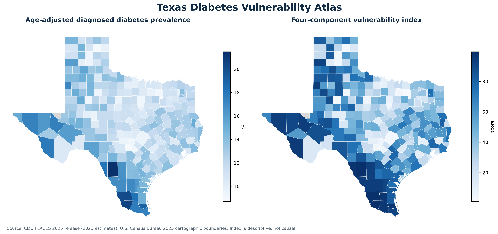
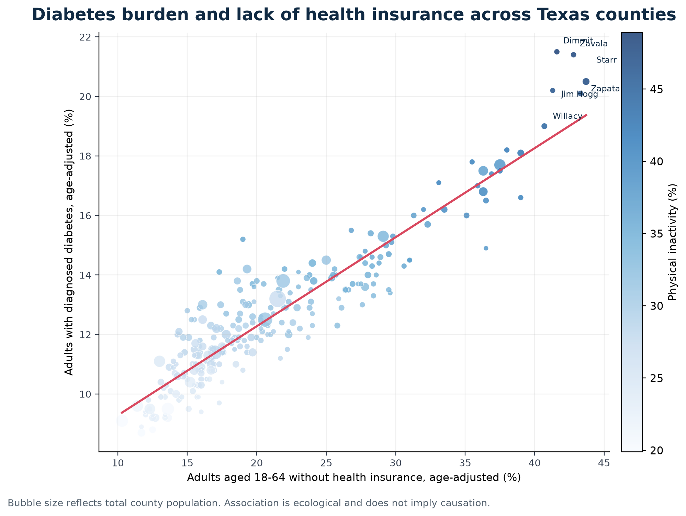

Texas Diabetes
Vulnerability Atlas
Where do diabetes burden and barriers to health overlap? A reproducible, county-level exploration of public data across Texas.

The question
Bring diabetes, obesity, physical inactivity, and lack of insurance into one transparent exploratory workflow.
The approach
Python data acquisition and quality checks, FIPS-based joins, percentile-rank scoring, sensitivity analysis, and GIS-ready outputs.
The scope
253 counties analyzed. All 254 county boundaries retained; Loving County estimates are suppressed.
Look inside the analysis
Uses CDC PLACES 2025 release (2023 estimates) and U.S. Census Bureau 2025 cartographic boundaries. Repository outputs identify 110 counties at or above both the diabetes and uninsured medians.
Descriptive and ecological, not a causal model or a clinically validated risk score. Model-based estimates, different age denominators, and equal component weights affect interpretation. Findings shown are from committed repository outputs.
Read the methodology